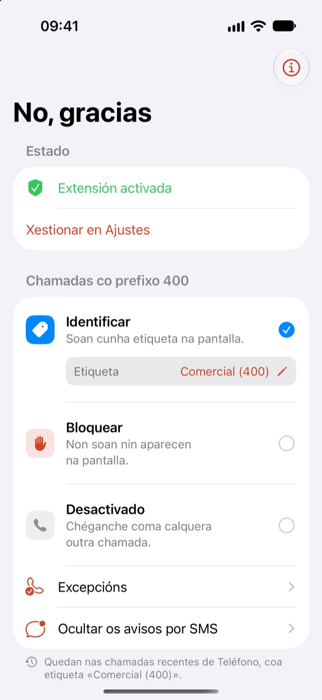
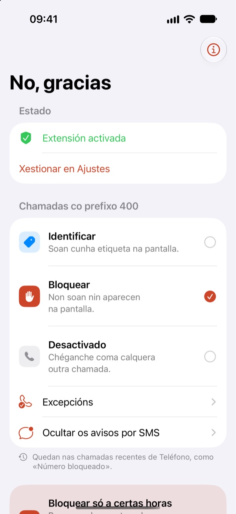
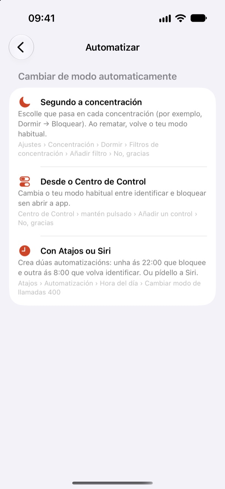

Prensa
Todo o necesario para escribir sobre «No, gracias». Podes usar libremente o texto, as capturas e a icona.
En poucas palabras
«No, gracias» é unha app gratuíta para iPhone que identifica ou bloquea as chamadas comerciais co prefixo 400, obrigatorio en España desde o 17 de outubro de 2026. Non ten anuncios nin contas e non recolle ningún dato: todo ocorre no iPhone.
Datos
- Nome: No, gracias
- Desenvolvedor: Oswaldo Rubio, desenvolvedor iOS independente
- Lanzamento: 7 de novembro de 2026 (App Store de España)
- Prezo: gratis, sen anuncios, sen subscrición nin versión de pagamento. Doazóns opcionais que non desbloquean nada.
- Requisitos: iPhone con iOS 18 ou posterior
- Idiomas: galego, castelán, catalán, éuscaro e inglés
- Privacidade: sen servidores, contas, analítica nin rastrexo
- App Store: apps.apple.com/es/app/id6830892528
Que fai
- Identificar: a chamada soa, pero na pantalla aparece «Comercial (400)» e decides se contestas.
- Bloquear: as chamadas 400 non soan nin aparecen, e quen chama non se decata.
- Que cambie soa: bloquea mentres dormes ou traballas cos filtros de concentración, o Centro de Control, Siri ou Atajos.
- Excepcións: números 400 concretos que sempre soan, como o do banco ou o do seguro.
- Filtro de SMS: oculta os avisos do operador sobre chamadas 400 xa bloqueadas.
A historia
Desde o 17 de outubro de 2026, as chamadas comerciais en España deben saír de números que empezan por 400. A norma permite recoñecelas, pero non as detén: seguen soando. As alternativas que había cobraban por bloquealas ou mostraban anuncios.
Oswaldo Rubio, desenvolvedor iOS, creou «No, gracias» para resolvelo gratis e sen recoller datos. A primeira versión pasou de idea a app funcionando en menos de 24 horas, desenvolvida coa axuda de Claude, o asistente de IA de Anthropic. Desde entón incorporou automatización, excepcións, un filtro de SMS e cinco idiomas, entre eles o galego e o éuscaro, pouco habituais en apps de utilidade.
Material
- Icona (1024 × 1024): clara · escura
- Capturas da App Store, en castelán (1320 × 2868): identificar · bloquear mentres dormes · só os comerciais
- Capturas da app, en galego: identificar · bloquear · automatizar
- Imaxe para redes (1200 × 630): og/gl.png


Contacto
Para entrevistas ou calquera dato: info@nogracias.app.


